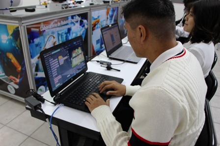

Colegio de Estudios Cientificos y Tecnologicos del Estado de Mexico
 Intrumentacion
La carrera de Técnico en Instrumentación Industrial ofrece el desarrollo y la adquisición de competencias profesionales para implementar y mantener en funcionamiento los sistemas de control automático para los diferentes procesos industriales, que a través del uso de los instrumentos de medición y control permiten: La automatización y el control de los procesos industriales, mantener los parámetros de calidad de los productos generados por los procesos industriales, supervisar la operación de los procesos industriales, recopilar información referente a los volúmenes de producción y a las cantidades de materia prima consumida, determinar las condiciones de seguridad en la operación del proceso.
Intrumentacion
La carrera de Técnico en Instrumentación Industrial ofrece el desarrollo y la adquisición de competencias profesionales para implementar y mantener en funcionamiento los sistemas de control automático para los diferentes procesos industriales, que a través del uso de los instrumentos de medición y control permiten: La automatización y el control de los procesos industriales, mantener los parámetros de calidad de los productos generados por los procesos industriales, supervisar la operación de los procesos industriales, recopilar información referente a los volúmenes de producción y a las cantidades de materia prima consumida, determinar las condiciones de seguridad en la operación del proceso.
 Mecatronica
La carrera de Técnico en Mecatrónica ofrece las competencias profesionales que permiten al estudiante realizar actividades dirigidas a: tareas de diagnóstico, instalación, reconversión y mantenimiento, a sistemas mecatrónicos, detectar anomalías en procesos de producción automatizados y realizar mantenimientos correctivos y preventivos en procesos integrales, verificando el funcionamiento de sensores, actuadores, mecanismos y programas de cómputo, que gobiernan la producción.
Mecatronica
La carrera de Técnico en Mecatrónica ofrece las competencias profesionales que permiten al estudiante realizar actividades dirigidas a: tareas de diagnóstico, instalación, reconversión y mantenimiento, a sistemas mecatrónicos, detectar anomalías en procesos de producción automatizados y realizar mantenimientos correctivos y preventivos en procesos integrales, verificando el funcionamiento de sensores, actuadores, mecanismos y programas de cómputo, que gobiernan la producción.

Mantenimiento
La carrera de Técnico en Mantenimiento Automotriz ofrece las competencias profesionales que permiten al estudiante: prestar servicios en áreas de mantenimiento automotriz, capaces de proporcionar mantenimiento al automóvil moderno, que exige cada vez mayor y mejor preparación tanto en áreas mecánicas como en electrónica y electricidad.
 Programacion
La carrera de Técnico en Programación ofrece las competencias profesionales que permiten al estudiante realizar actividades dirigidas a: analizar, diseñar, desarrollar, instalar y mantener software de aplicación tomando como base los requerimientos del usuario. Todas estas competencias posibilitan al egresado su incorporación al mundo laboral o desarrollar procesos productivos independientes, de acuerdo con sus intereses profesionales y necesidades de su entorno social.
Programacion
La carrera de Técnico en Programación ofrece las competencias profesionales que permiten al estudiante realizar actividades dirigidas a: analizar, diseñar, desarrollar, instalar y mantener software de aplicación tomando como base los requerimientos del usuario. Todas estas competencias posibilitan al egresado su incorporación al mundo laboral o desarrollar procesos productivos independientes, de acuerdo con sus intereses profesionales y necesidades de su entorno social.